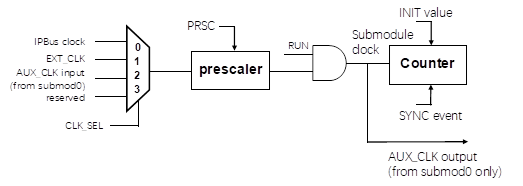
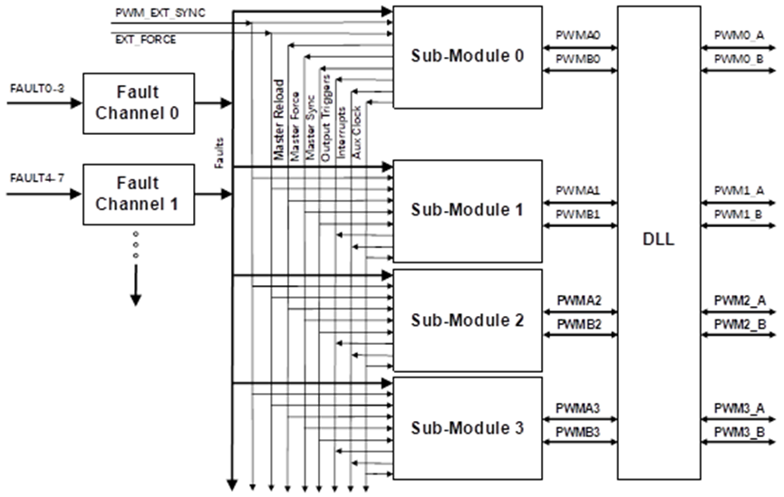

MindPWM应用笔记
简介
本应用笔记作为UM的补充，以MM32F5370系列为例，讲解MindPWM的功能与使用步骤。文中对应例程可在EVB-F5375开发板上验证。
功能列表
16位分辨率PWM，支持中央对齐、边缘对齐和相移等模式
支持双开关PWM输出
支持有符号数生成PWM
独立可编程PWM输出极性
每个PWM输出可通过软件独立控制
支持小数PWM以提高周期和占空比分辨率
HRPWM时钟生成
HRPWM时钟不可用时，使用周期性抖动模拟小数PWM
PWM可以作为互补对或独立通道输出
死区时间的独立插入
每个互补对可以独立配置PWM频率和死区时间值
支持PWM输出上升和下降沿的独立控制
支持与外部硬件或其他PWM的同步
PWM影子寄存器，在RELOAD事件时生效，支持整周期或者半周期RELOAD能力
每个PWM周期可以通过硬件生成多个输出触发事件
可通过故障输入（FAULT）控制多个PWM输出
故障输入支持可编程滤波
所有的输出可以通过FORCE事件同时更改
PWMX引脚可以选择为从每个子模块输出的第三个PWM信号
功能详解
此部分作为UM的补充，通俗地讲解MindPWM使用中需要注意的关键点。UM中已详尽描述的内容不在此赘述。
时钟选择

由SMxCR0[1:0]位决定子模块的时钟源。其中，
IPBus CLOCK指APB2总线时钟；
EXT_CLK指名称为MDPWM_ETR(详见具体芯片的Datasheet)的引脚外灌的时钟脉冲；
AUX_CLK 指由子模块0产生的时钟，受子模块0的预分频和RUN影响。注意子模块0本身没有此时钟源。
寄存器重载与计数器同步
预装载寄存器内的值在 RELOAD 事件发生的时候传输到内部影子寄存器。寄存器重载有两种方式：
第一， SMxCR0.[24] = 1 时，重载选择子模块 0 的 Master RELOAD 信号。而 Master RELOAD 则是子模块0本身的 Local RELOAD 。
第二， SMxCR0.[24] = 0 时，重载选择子模块的 Local RELOAD。Local RELOAD 又可以根据LDMOD 的值选择不同的重载方式。
计数器同步，即让计数器的值设定为从 INIT 开始计数。同步中使用到 Local Sync 与 Master Sync，理解起来同前述重载的 Local RELOAD 与 Master RELOAD。
重载与同步中提到的 PWM_EXT_SYNC 和 EXT_FORCE 信号，来自 MindSwitch，可以灵活连接到 Timer、EXTI 等其他 IP 的输出，具体见 UM 里芯片特定配置章节的 MindSwitch 映射关系。
PWM输出
PWM的输出有中央对齐模式、边沿对齐模式、相移模式、双开关模式，其中中央对齐模式又分向上计数与向上向下计数两种。无论哪种模式，都涉及到了 SMxINIT、SMxVAL0、SMxVAL1、SMxVAL2、SMxVAL3、SMxVAL4 、SMxVAL5 这几个寄存器的设置。可以简单地理解为，SMxINIT 与 SMxVAL1的差值决定了 PWM 的周期，SMxVAL2 与 SMxVAL3 的差值决定了PWMA的占空比， SMxVAL4 与SMxVAL5 的差值决定了 PWMB 的占空比。而 SMxVAL0 的值在 SMxINIT 与 SMxVAL1 之间，用于产生半周期信号。SMxINIT 是初值，发生 sync 事件后计数器回到 SMxINIT。Sync 事件的来源由 SMxCR0[16:19] 决定，注意 4bit 中分别选中代表的事件以或的操作来生成 SYNC 事件。
HRPWM
每个子模块的 PWMA 和 PWMB 输出，可经过 DLL (Delay Locked Loop) 的细调，改变上升沿、下降沿的输出宽度，从而调整 PWM 的占空比和周期，实现高精度的 PWM 的输出。
当芯片中没有 DLL 模块时，可以使 SMxFRCR0.FRAC_PU 为 0，来开启抖动方式实现小数延时。
故障保护

MindPWM支持四个 Fault 通道，分别为 Fault Channel 0、Fault Channel 1、Fault Channel 2、Fault Channel 3。每个 Fault 通道又包括 4 个 Fault 输入，共计 16 个 Fault 输入。16 个输入源详见 UM 中芯片特定配置章节的系统模块硬件互联。
CSS输出作为MindPWM_FAULT0；
名称为MDPWM_FLT1 - MDPWM_FLT12的引脚输入对应MindPWM_FAULT1 - MindPWM_FAULT12；
COMP1、COMP2、COMP3输出对应MindPWM_FAULT13、MindPWM_FAULT14、MindPWM_FAULT15。
这些Fault通道可以用来控制任意子模块的输出。每个子模块可以通过 SMxFDIS0、SMxFDIS1 寄存器自由选择任意 Fault 输入的组合，子模块 PWM 输出在 Fault 时的状态由 SMxOCR.PWMy_FS 寄存器单独控制。
故障保护的使用示例
选择故障保护源
配置 FCxCR0 与 FCxCR1 寄存器
关联到PWM输出子模块
例程详解
重要的宏定义
修改此宏定义，可以改变PWM输出的频率与占空比。
重要的结构体
初始化 PWM 外设模块。使用 PWM_GetDefaultConfig() 函数可以获取默认的设置。
PWM 信号结构体。设置 PWM 的输出特性，占空比、死区等。
PWM_Fault 初始化结构体。使用 PWM_FaultDefaultConfig() 函数可以获取默认设置。
fault input filter 设置。
例程工作流程
设置 PWM 输出引脚。
配置 PWM 模块参数。
使能 3 对 PWM。
设置 PA10 为 MindPWM Fault 源。EVB 开发板中，杜邦线连接 PA10 与 PC13，然后按 K1 键可以看到刹车效果。